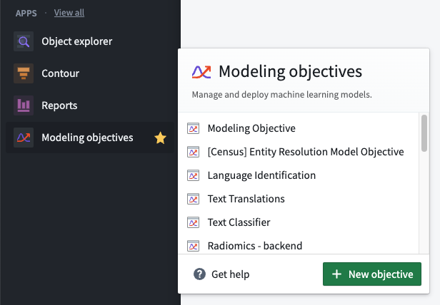
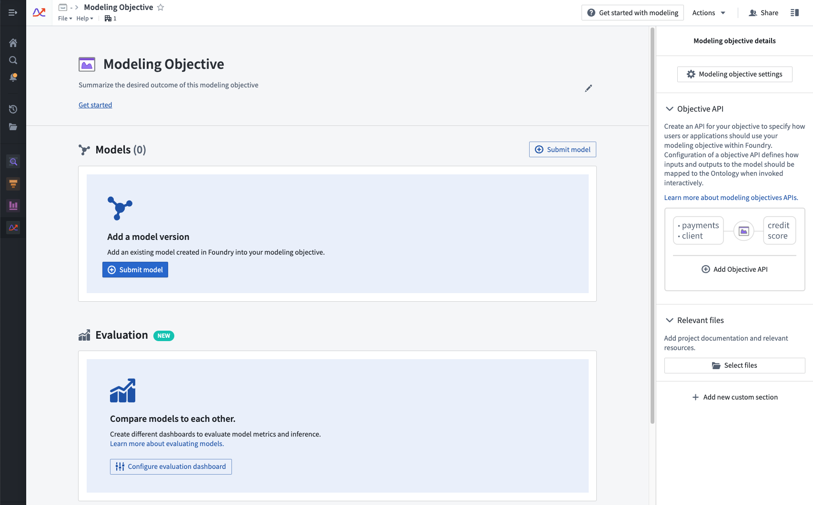
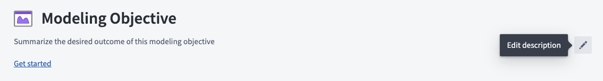

The Modeling Objectives application is an intuitive workspace for teams to manage models as they progress through the modeling lifecycle. Creating a modeling objective helps simplify a modeling project by consolidating models, metadata, and data sources alongside the model review, release, and deployment of those models.
Create a modeling objective by selecting the Modeling Objectives application on the Foundry sidebar and clicking New objective.

After the modeling objective has been created, you can select a location to save the objective. We recommend saving the modeling objective in a centralized location where all relevant contributors, stakeholders, and consumers will have access to the project.

Modeling objectives can be edited and configured in several ways. This section provides more information about configuration options available for modeling objectives.
After creating a modeling objective, you can add a description by clicking the Edit description button. The description field is Markdown â-compatible; we recommend using this space as a README for the objective and its goals.

There are several options available for editing objective metadata, including: